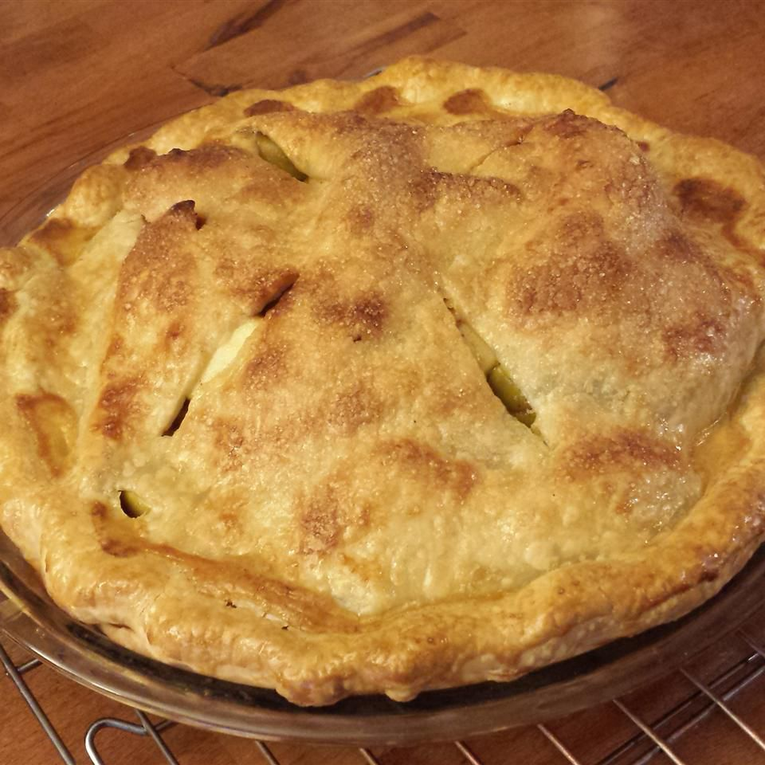

Description
312 Calories | 9g Fat | 59g Carbs | 3g Protein
Prep Time: 20 mins | Cook Time: 40 mins | Additional Time: 30 mins
Total Time: 1 hrs 30 mins | Servings: 8 | Yield: 1 to 9 - inch pie
Ingredients
- ⅓ cup packed light brown sugar
- ⅓ cup white sugar
- 1 tablespoon all-purpose flour
- 1 teaspoon lemon juice
- ⅓ teaspoon ground cinnamon
- 7 ½ cups peeled, cored and sliced apples
- 1 cup raisins
- 1 recipe pastry for a 9 inch double crust pie
- 1 egg
Directions
- Preheat oven 425 degrees F (220 degrees C). Spray deep dish pie plate with cooking spray
- Combine white sugar, light brown sugar, flour, lemon, cinnamon, and mix well. Add apples and raisins to sugar mixture; stir until fruit is well coated.
- Spoon apple mixture into pie crust. Place second piecrust on top of filling, and trim edges. Lightly glaze top of pie with a beaten egg, then sprinkled with a little sugar.
- Bake till golden brown, about 35 to 40 minutes. Place on a wire rack, and cool 30 minutes.